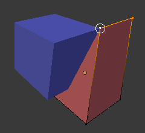

Snapping¶
Reference
- Mode
-
Object, Edit, and Pose Mode
- Header
-
- Hotkey
-
Shift-Tab
The ability to snap objects and mesh element to various types of scene elements during a transformation is available by toggling the magnet icon in the 3D Viewport’s header buttons.
Magnet icon in the 3D Viewport header (blue when enabled).¶
Snap Element¶
Reference
- Mode
-
Object, Edit, and Pose Mode
- Header
-
- Hotkey
-
Shift-Ctrl-Tab

Snap Element menu.¶
- Increment
-
Snap to grid points. When in Orthographic view, the snapping increment changes depending on zoom level.
Note
In this context the grid does not mean the visual grid cue displayed. Snapping will use the resolution of the displayed grid, but all transformations are relative to the initial position (before the snap operation).
- Vertex
-
Snap to vertices of mesh objects.
- Edge
-
Snap to edges of mesh objects.
- Face
-
Snaps to the surfaces of faces in mesh objects; This is useful for retopologizing.
- Volume
-
Snaps to regions within the volume of the first object found below the mouse cursor. Unlike the other options, this one controls the depth (i.e. Z coordinates in current view space) of the transformed element. By toggling the button that appears to the right of the snap target menu (see below), target objects will be considered as a whole when determining the volume center.
- Edge Center
-
Snaps to the middle of an edge. This snap element only pertains to mesh objects.
- Edge Perpendicular
-
Snaps to the nearest vertex in an edge that makes a perpendicular angle. This snap element only pertains to mesh objects.
Tip
Multiple snapping modes can be enabled at once by Shift-LMB the different snapping elements.
Snap Target¶
Reference
- Mode
-
Object, Edit, and Pose Mode
- Header
-
- Hotkey
-
Shift-Ctrl-Tab
Snap target options become active when either Vertex, Edge, Face, or Volume is selected as the snap element. These determine what part of the selection snaps to the target objects.
- Active
-
Moves the active element (vertex in Edit Mode, object in Object Mode) to the target.
- Median
-
Moves the median of the selection to the target.
- Center
-
Moves the current transformation center to the target. Can be used with 3D cursor to snap with an offset.
- Closest
-
Moves the closest point of the selection to the target.

Closest.¶ |

Active.¶ |

Median.¶ |
Additional Snap Options¶
As seen by the yellow highlighted areas in the image above, besides the snap target, additional controls are available to alter snap behavior. These options vary between mode (Object and Edit) as well as Snap Element. The four options available are:
- Absolute Grid Snap
-
Available only for the increase option. Snap to grid, instead of snapping in increments relative to the current location.
- Backface Culling
-
Exclude back facing geometry from snapping.
- Project Onto Self
-
Available only in editing mode for Vertices, Edges, Faces and Volume. Snaps elements to its own mesh.
- Align Rotation to Target
-
Available for Vertices, Edges, Faces and Volume. When the Snap Affects Rotation, this align rotation with the snapping target.
- Project Individual Elements
-
Available for snap to Faces. Project individual elements on the surface of other objects.
- Snap Peel Object
-
Available for snap to Volume. Consider objects as whole when finding volume center.
- Affect
-
Limits the effect of the snap to the transformation type.
Multiple Snap Targets¶
Once transforming a selection with Snapping on (not just when holding Ctrl), you can press A to mark the current snapping point, then proceed to mark as many other snapping points as you wish and the selection will be snapped to the average location of all the marked points.
Marking a point more than once will give it more weight in the averaged location.
Multiple snapping targets.